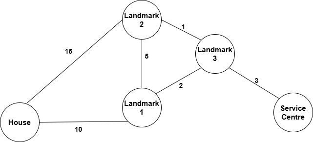

SDG 9.1: Develop quality, reliable, sustainable, and resilient infrastructure to support economic development and human well-being.
SDG 11.2: Provide access to safe, affordable, accessible, and sustainable transport systems for all.
SDG 8.2: Achieve higher levels of economic productivity through diversification, technological upgrading, and innovation.
Indicator:
9.1.2: Proportion of the rural population who live within 2 km of an all-season road (interpreted here as proximity to automobile service centres).
11.2.1: Proportion of population that has convenient access to public transport (adapted to ease of access to automobile service centres).
8.2.1: Annual growth rate of real GDP per employed person (linked to operational efficiency gained through sorting services offered by the centre).
Available services and their costs:
Services
Costs
Wiping Windshield
50
Oil Change
100
Tire Rotation
30
Battery Check
20
Brake Inspection
70
The shortest paths from home to service centres are represented below:
From
To
Distance (Cost)
Home
Landmark 1
10
Landmark 1
Landmark 2
5
Landmark 1
Landmark 3
2
Landmark 2
Landmark 3
1
Landmark 3
Service Centre
3
Home
Landmark 2
15

Map of home and centre in city
An optimal shortest path from home to centre using Dijkstra's algorithm. The data generated for city map for home and centre can be found in the file HERE, and for the service to cost data HERE. The Dijkstra's code and the Heap Sort code can be viewed HERE. The code uses STL containers, a 2D vector for graph input, and a priority queue for Dijkstra’s algorithm. Heap sort uses a vector of pairs to store service-cost data. Dijkstra's algorithm is implemented with O(E log V) complexity, and Heap Sort has O(n log n) complexity. This case highlights how these algorithms can be applied in real-time scenarios.
Reflections on Business Case 2
Subtask: Dijkstra Algorithm for Shortest Path
Understanding the application of Dijkstra’s algorithm for real-time navigation scenarios enhanced problem-solving skills.
Learning how to work with STL containers and priority queues highlighted the importance of efficient data handling.
Mapping real-world locations to graph nodes made the abstract concept of graph traversal tangible and practical.
O(E log V) complexity emphasized the algorithm's efficiency for scenarios with dense graphs.
Exploring alignment with SDG 9 and SDG 11 reinforced the connection between technical proficiency and societal benefits.
Subtask: Heap Sort Algorithm for Service Sorting
Implementing Heap Sort to prioritize automobile services based on cost demonstrated the real-world utility of sorting algorithms.
Using a vector of pairs to store service-cost data provided insight into combining data structures for optimal results.
The O(n log n) complexity of Heap Sort emphasized the balance between speed and precision in sorting large datasets.
Connecting this task to SDG 8 showcased how operational efficiency aligns with economic growth and innovation.
Applying both algorithms within a cohesive business case highlighted the value of integrating diverse techniques to solve multifaceted problems.